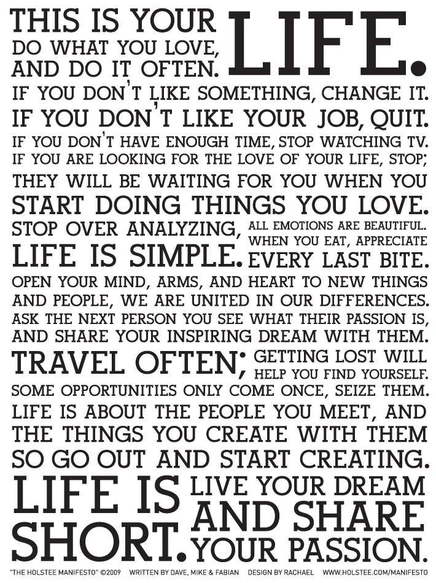

Blog · January 8, 2013
What if Google ads were replaced with inspirational words? It’s happening to me.

Back in December I saw an ad for Holstee. For the first time ever, I clicked (and ended up buying inspiring notecards printed on 50% elephant poo). Since that fine day, Holstee has been stalking me.
And I love it.
I read about monkeys plaguing Puerto Rico and Holstee is there. I browse Colossal; Holstee is there. NYT, WSJ, YouTube..Holstee is there. There’s really nothing like clicking on a link and getting a thumbnail of “share your passion” or even better — while wasting time on Reddit, “life is short” pops up and jolts my supernova self back into focus.
I occasionally click the ads and buy more things from Holstee, as much in joy to share their kind words with friends as to keep these awesome ads in my browser.
Have you ever experienced something like this? Have you ever tried hacking Google Ads?
In case you need visual proof, here are a couple screenshots:
First published on my old blog, amyrobinson.wordpress.com, January 8, 2013.